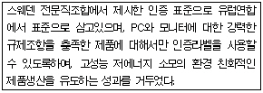
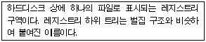
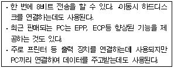
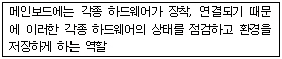

PC정비사-2급 (2005-01-30 기출문제)
1과목: PC유지보수
1. 컴퓨터를 부팅할 때마다 ‘CMOS Checksum Error'가 발생한다. CMOS SETUP에서 설정을 변경하고 재부팅하면 이상이 없지만 전원을 끈 후에 다시 켜보면 같은 증상이 나타난다. 원인으로 타당한 것은?
- CMOS 배터리 방전이 원인이다.
- HDD의 부트섹터 오류가 원인이다.
- CPU의 무리한 오버클록이 원인이다.
- BIOS의 버전이 낮은 것이므로 업데이트하면 해결된다.
(정답률: 88%)

2. 디스플레이 어댑터의 드라이버를 설치하는 방법 중 잘못된 것은?
- [시작버튼]-[설정]-[제어판]-[디스플레이]-[설정]-[고급]-[어댑터]
- [바탕화면]-[등록정보]-[설정]-[고급]-[어댑터]
- [시작버튼]-[설정]-[제어판]-[시스템]-[장치관리자]-[디스플레이어댑터]-[등록정보]
- [시작버튼]-[설정]-[제어판]-[프로그램 추가/제거]-[설치/제거]-[설치]
(정답률: 79%)
3. 어워드 바이오스(Award Bios)에서 하드디스크를 포맷하거나 FDISK를 실행시에 반드시 "disabled" 하여야 하는 항목은?
- CPU Internal cache
- Boot Sequence
- Virus Warning
- Boot up Floppy Drive
(정답률: 56%)
4. CMOS 셋업과 관계없는 것은?
- 하드디스크의 증설
- COM 포트 변경
- USB 키보드 사용
- 주기억 장치 증설
(정답률: 38%)
5. 하드디스크의 물리적 구성요소가 아닌 것은?
- Track
- Cylinder
- FAT
- Sector
(정답률: 75%)
6. 플러그 앤 플레이(Plug & Play)에 대한 설명이다. 잘못된 것은?
- Windows에서 사용자가 쉽게 하드웨어를 설치하도록 도와주는 규약이다.
- 하드웨어(Hardware)를 컴퓨터에 설치하기만 하면 자동으로 인식하여 기본 드라이버가 있는 경우 이를 설치한다.
- 윈도우 95 이전부터 사용되었다.
- 컴퓨터의 부팅과 함께 작동하며, 각 하드웨어(Hardware)를 검색한다.
(정답률: 88%)
7. 다음에 설명하는 용어로 가장 적합한 것은?

- VDT
- TCO
- IIS
- VLP
(정답률: 64%)
8. PC 부품은 정전기에 매우 민감하게 반응하므로 PC 정비에 주의를 요한다. 다음 중 정전기로 인한 에러를 대비하기 위한 방법으로 잘못된 것은?
- 옷소매를 팔꿈치 위까지 걷어 올린 후 케이스를 한 번 만진 다음에 마더보드에 램을 장착한다.
- 인터페이스 카드를 운반할 때는 엄지와 검지손가락 만을 이용해 PCB 기판의 양쪽 끝을 맞잡는다.
- 램을 보관할 때 은박지에 감싼다.
- 하드디스크를 케이스에 장착할 때 나사가 마더보드 위에 떨어지기 쉬우므로 자석 드라이버를 이용한다.
(정답률: 54%)
9. AGP 방식 디스플레이 어댑터를 사용하는 시스템에서 부팅할 때마다 에너지 스타 부분이 '흑백으로 나타났다 컬러로 나타났다' 하는 현상이 비정기적으로 발생한다. 다음 중 의심하지 않아도 되는 것은?
- 디스플레이 어댑터와 모니터 접촉 불량 여부
- 비디오 신호 케이블이 서로 접촉되고 있는 지의 여부
- 램댁의 오류 여부
- 슬롯에 완전히 장착되었는지의 여부
(정답률: 63%)
10. 부팅시 잦은 오류가 발생하거나, 다운이 되는 컴퓨터가 있다. 이러한 원인으로 잘못된 것은?
- CPU 클럭 설정 이상
- SMPS 전력 부족
- 메모리 용량 초과
- 하드디스크 베드섹터
(정답률: 29%)
11. 현재 컴퓨터가 부팅이 되지 않고 있다. 모니터에 아무 내용도 나타나지 않고 있다. 이를 해결하기 위한 방법으로 잘못된 것은?
- 파워 서플라이에 공급되는 전원을 확인해 본다.
- 다른 메인보드로 테스트해 본다.
- 메인보드에 장착한 부품들을 제대로 조립해 본다.
- 모니터를 바꾼다.
(정답률: 86%)
12. Windows를 설치하는 도중 시스템이 멈추고 응답이 없는 경우가 생길 수 있는데, 추정할 수 있는 문제점이 아닌 것은?
- 바이러스가 있는 파일이 디스크에 저장 되어 있을 경우
- 바이러스에 감염이 된 경우
- 메모리상에 바이러스 예방 프로그램이 상주 되어 있는 경우
- CMOS BIOS내에 바이러스를 예방하는 기능이 켜져 있는 경우
(정답률: 40%)
13. CMOS에 HDD를 설정하려고 하지만 현재 이 컴퓨터는 HDD가 존재하지 않는다. 이럴 때 가장 효율적으로 작동 시키려면 다음 중 어디에 HDD를 연결하여야 하는가?
- Primary Master
- Primary Slave
- Secondary Master
- Secondary Slave
(정답률: 76%)
14. M/B 교체 없이 CPU만으로 업그레이드가 불가능한 경우는?
- 셀러론300에서 P-Ⅱ333
- P-Ⅱ350에서 P-Ⅲ500
- MMX166에서 MMX200
- K6에서 애슬론 XP
(정답률: 60%)
15. 화상통신 시스템을 구성하려고 한다. 이때 End of End 형에 해당하지 않는 것은?
- 팩시밀리
- 케이블 TV
- CCTV
- 비디오텍스
(정답률: 45%)
2과목: PC운영체제
16. GUI 방식에 대해 올바르게 정의한 것은?
- GUI는 Graphic Use Internet의 약자이다.
- 입/출력 방식이 그래픽 인터페이스이다.
- 프로그래머에게 가장 적합한 메뉴 환경을 제공한다.
- 사용자 중심적 도스쉘 인터페이스를 제공한다.
(정답률: 57%)
17. 미국의 Bell 연구소에서 만든 운영체제로 멀티태스킹과 멀티프로그램이 가능한 운영체제의 이름은?
- LINUX
- Windows XP
- PC-DOS
- UNIX
(정답률: 64%)
18. 마이크로소프트사의 Windows 운영체제의 개발 순서가 바르게 나열된 것은?
- Windows 95 - Windows 98 - Windows XP - Windows ME
- Windows ME - Windows 95 - Windows 98 - Windows XP
- Windows 95 - Windows 98 - Windows ME - Windows XP
- Windows 95 - Windows ME - Windows 98 - Windows XP
(정답률: 70%)
19. PDA의 OS가 아닌 것은?
- PALM OS
- CELLVIC OS
- Windows CE
- PDA MAC OS
(정답률: 46%)
20. 운영체제의 종류와 특성에 대한 다음 설명 중 잘못된 것은?
- DOS로부터 진화한 Win95/98 운영체제는 아직도 DOS의 주요한 특징을 많이 내포하고 있다.
- UNIX는 대형 시스템을 중심으로 사용되는 운영체제로서 PC환경에서는 사용되지 않고 있다.
- LINUX는 대형 시스템에서 사용되던 UNIX를 PC환경에 이식한 것으로서 PC 이외의 환경에서는 사용할 수 없다.
- 마이크로소프트의 Win95/98 및 Windows XP는 PC 환경에서 유일하게 GUI 환경을 제공하는 운영체제이다.
(정답률: 43%)
21. Windows XP에서 바탕화면에 현재 보고 있는 웹페이지를 표시하고 싶을 때 바람직한 방법은?
- [시작]대화상자에서 [찾기]대화상자를 선택하고 원하는 웹페이지를 입력한다.
- [디스플레이 등록정보]대화상자의 [바탕화면]탭에서 <바탕화면 사용자지정>단추를 선택 [바탕화면 항목] 대화상자의 [일반]탭에서 <바탕화면 정리 시작>단추를 클릭한다.
- [디스플레이 등록정보]대화상자의 [바탕화면]탭에서 <바탕화면 사용자지정>단추를 선택하고 [바탕화면 항목]대화상자의 [웹]탭에서 <새로만들기>단추를 선택한 다음 [새 바탕화면 항목]대화상자에서 웹페이지 주소를 입력하고 <확인>단추를 누른다.
- [시작]-고정시키고자 하는 프로그램 아이콘에 마우스 오른쪽 단추를 누른다. 단축메뉴중에 [시작메뉴에 고정]을 선택한다.
(정답률: 82%)
22. Windows XP에서 새로 지원하는 기능이 아닌 것은?
- PPPoE 지원
- 개인 방화벽 기능
- 빠른 사용자 전환 기능
- 시스템 복원 기능
(정답률: 46%)
23. Windows XP에서 BMP 형식의 그림을 수정하고자 할 때 적당한 프로그램은?
- 워드패드
- 그림판
- 메모장
- 클립보드
(정답률: 89%)
24. 컴퓨터 바이러스에 감염되었다고 볼 수 없는 증상은?
- 컴퓨터가 작동 중에 이유 없이 갑자기 느려지고, 프로그램 실행 도중 에러가 자주 발생한다.
- 아무런 이유 없이 컴퓨터를 켰을 때 부팅이 정상적으로 이루어지지 않거나, 부팅은 되는데 일부 디스크 또는 드라이브가 인식되지 않는다.
- 작업 중에 이전에 저장했던 파일이 갑자기 없어지거나, 실행 프로그램의 날짜나 크기 등이 변경되어진다.
- 컴퓨터내의 디렉토리 등록정보를 점검했더니 디렉토리의 크기보다 디렉토리의 사용량이 더 크고, 디렉토리 크기와 사용량이 두 배 이상 차이 나는 경우도 있다.
(정답률: 59%)
25. 설치된 Windows XP의 구성 요소를 바꾸려고 한다. 시작 메뉴의 [제어판]-[프로그램 추가/제거]-[Windows 구성요소 추가/제거]의 항목을 선택하였을 때 Windows 구성 요소에 포함되지 않는 것은?
- 프린터
- Windows Media Player
- 보조프로그램 및 유틸리티
- 관리 및 모니터링 도구
(정답률: 80%)
26. Windows XP에서 보조프로그램 내의 ‘내게 필요한 옵션’ 중 유틸리티 관리자에 대한 설명 중 잘못된 것은?
- 유틸리티 관리자에서 기본으로 제공되는 내게 필요한 옵션 프로그램은 돋보기 및 화상 키보드이다.
- 유틸리티 관리자를 사용하면 내게 필요한 옵션 프로그램의 상태를 확인하고 내게 필요한 옵션 프로그램을 시작하거나 중지할 수 있다.
- 관리자 수준 액세스 권한이 있는 사용자는 유틸리티 관리자를 시작할 때 프로그램이 시작되도록 지정할 수 있다.
- 컴퓨터가 더 빠르고 효율적으로 작동하도록 조각난 볼륨을 모아준다.
(정답률: 56%)
27. 다음 중 제어판의 CPL 파일과 항목이 잘못된 것은?
- DESK : 디스플레이
- SYSDM : 날짜
- ACCESS : 내게 필요한 옵션
- MMSYS : 사운드 및 오디오 장치 등록정보
(정답률: 34%)
28. 다음에서 설명하는 용어는?

- 허브
- 하이브
- 게이트웨이
- 네트워크
(정답률: 70%)
29. Windows Messenger에서 대화상대를 추가하려고 할 때 옳은 것은?
- [도구]-[대화상대 관리]를 선택한다.
- [동작]-[인스턴스 메시지 보내기]를 선택한다.
- [도구]-[대화상대 추가]를 선택한다.
- [동작]-[채팅방 들어가기]를 선택한다.
(정답률: 77%)
30. 포맷(FORMAT)에 대한 설명이다. 잘못된 것은?
- 포맷은 플로피디스크나 하드디스크 혹은 읽고 쓸수 있는 광디스크를 초기화하기 위해 사용한다.
- 포맷을 실행할 경우 디스크에 있는 모든 데이터는 삭제된다.
- 도스로 컴퓨터를 부팅하기 위해 필요한 MSDOS.SYS, IO.SYS, COMMAND.COM의 시스템 파일을 포맷하는 디스크로 복사해 부팅 가능하도록 만들 때는 /S 옵션을 사용한다.
- /C 옵션은 이미 포맷하여 사용하던 디스크에만 사용할수 있는 옵션으로 파일할당표와 루트 디렉토리만 삭제하는 방법으로 빠르게 포맷한다.
(정답률: 69%)
3과목: PC주변기기
31. 인텔이 자사의 프로세서를 위해 정상적인 환경에서 동작하도록 한 전원공급방식을 규정한 용어는?
- BTX
- FPGA
- VRM
- ATX
(정답률: 36%)
32. DDR400 규격의 DDR SDRAM 두 개를 Dual Channel을 지원하는 메인보드에 장착했을 때 얻을 수 있는 최대 이론적 전송대역은?
- 800MB/s
- 1600MB/s
- 3200MB/s
- 6400MB/s
(정답률: 47%)
33. 현재 사용 중인 마우스는 PS/2를 인터페이스로 사용한다. 그러나 메인보드의 PS/2 Port에 문제가 생겨 컨버터를 이용하여 다른 인터페이스에 연결하고자 할 때 가장 적당한 것은?
- USB
- Serial Port
- IEEE-1394
- 변경할 수 없다.
(정답률: 73%)
34. 주기억장치의 특성으로 알맞은 것은?
- 정보의 양은 bit 단위로 나타낸다.
- 휘발성 메모리이다.
- 보조기억장치에 비해 속도가 느리다.
- 캐시메모리에 비해 속도가 빠르다.
(정답률: 50%)
35. 다음의 메모리 종류 중에서 주기억 장치로 사용되는 메모리가 아닌 것은?
- SDRAM
- RDRAM
- SGRAM
- DDR SDRAM
(정답률: 69%)
36. 스크린에 출력될 이미지 데이터를 저장하는데 사용되는 메모리는?
- 캐시 메모리 (Cache Memory)
- 비디오 메모리 (Video Memory)
- 플래시 메모리 (Flash Memory)
- 하드 디스크
(정답률: 63%)
37. 하드디스크와 관련된 설명 중 잘못된 것은?
- 컴퓨터의 보조 기억장치이다.
- 프로그램 등 많은 양의 데이터를 취급할 때 사용하는 고속의 저장 장치이다.
- 사용 부주의로 하드디스크를 포맷하면 정보가 지워진다.
- 컴퓨터의 전원이 OFF 되면 정보가 지워진다.
(정답률: 87%)
38. 스캐너의 해상도에 대한 설명으로 옳은 것은?
- 해상도는 단위 미터당 점의 개수로 측정된다.
- 해상도가 낮을 수록 더 깨끗하고 정밀하다.
- 해상도가 높을 수록 이미지의 저장 용량이 커진다.
- 해상도가 높을 수록 스캐닝하는 시간이 짧아진다.
(정답률: 80%)
39. 다음 그래픽카드 중 기본적으로 3D 가속기능이 없는 것은?
- Geforce 4
- Radeon 7500
- i740
- ET4000
(정답률: 50%)
40. PC의 핵심적인 부품인 "중앙처리장치(CPU)"가 아닌 것은?
- 인텔사의 80386DX칩
- 인텔사의 팬티엄 프로세서
- 인텔사의 440BX칩
- AMD사의 K6-2
(정답률: 37%)
41. USB(1.1) 장치의 장점을 설명한 것 중 잘못된 것은?
- 최대 127개의 주변기기 연결이 가능하다.
- 시리얼, 패러럴에 비해 아직 속도는 느린 편이다.
- USB 케이블을 통해서 전원이 공급되어 별도의 전원이 필요 없다.
- 최근에 생산되는 메인보드에는 기본적으로 제공되는 인터페이스이다.
(정답률: 77%)
42. 다음에 설명하는 것은?

- SCSI 버스
- 직렬 포트
- 병렬 포트
- 네트워크 카드
(정답률: 64%)
43. SCSI 규격은 변화되어 여러 가지 종류로 발전하였다. 다음 중 SCSI의 규격과 속도가 잘못 연결된 것은?
- SCSI -Ⅰ : 5 MB/S
- SCSI - Ⅱ : 10 MB/S
- ULTRA SCSI : 20 MB/S
- WIDE SCSI : 40MB/S
(정답률: 41%)
44. 메인보드의 부품 중 다음 설명에 해당하는 것은?

- 바이오스
- IO 칩셋
- 점퍼
- 칩셋
(정답률: 75%)
45. 다음 중 컴퓨터에서 소리를 합성할 때 사용하는 방식 중에서 소리의 주파수를 변조해 소리를 만드는 음파합성 방식에 적합한 것은?
- PCM(Pulse Coded Modulation) 방식
- FM(Frequency Modulation) 음원 방식
- 웨이브 테이블(WAVE TABLE)
- 풀 듀플렉스(Full Duplex)
(정답률: 49%)
4과목: PC네트워크
46. 컴퓨터 통신에서 컴퓨터간의 정보 교환을 원활하게 하기 위하여 규정된 통신규약은?
- 인터페이스
- 프로토콜
- 터미널
- 샘플링
(정답률: 69%)
47. 웹 브라우저, 웹 서버 간에 데이터를 안전하게 교환하기 위한 프로토콜로서 웹 제품 뿐아니라 FTP나 텔넷 등 다른 TCP/IP 애플리케이션에 적용할 수 있는 보안기술은?
- SET
- SSL
- S/MIME
- PGP
(정답률: 73%)
48. 불특정 다수의 웹 사용자를 대상으로 글을 게시할 수 있으며 또 다른 사용자의 글을 자유롭게 조회할 수 있는 시스템은?
- BBS
- FTP
- DNS
(정답률: 45%)
49. 가정에서 PC통신이나 인터넷을 이용하기 위하여 사용되는 방식이 아닌 것은?
- ADSL
- Cable Modem
- ISDN III
- Modem
(정답률: 84%)
50. 메일 클라이언트 프로그램으로 Outlook Express를 사용하고 있다. 이때 메일을 보내는 프로토콜은?
- SNMP
- SMTP
- POP
- IMAP
(정답률: 80%)